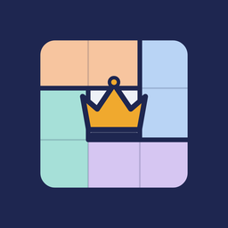

Knobel
Jeden Tag drei neue Logikrätsel
Bei Google Play ansehenKronenEine Krone pro Zeile, Spalte und Farbe. Kronen dürfen sich nicht berühren.
Sonne & MondBring jede Zeile und Spalte ins Gleichgewicht.
PfadZieh eine Linie durch jedes Feld und besuche die Zahlen der Reihe nach.
Für alle gleich, jeden Tag neu. Die Rätsel sind reine Logik, jedes hat genau eine Lösung. Die Schwierigkeit steigt über die Woche: Montag leicht, am Wochenende knackig.
Sammle Punkte, halte deine Serie und steig bei den Abzeichen Stufe um Stufe auf. Knobel braucht kein Konto und funktioniert auch offline.
English: Knobel brings you three fresh logic puzzles every day – Crowns, Sun & Moon and Path. Pure logic, one solution each, no account needed.